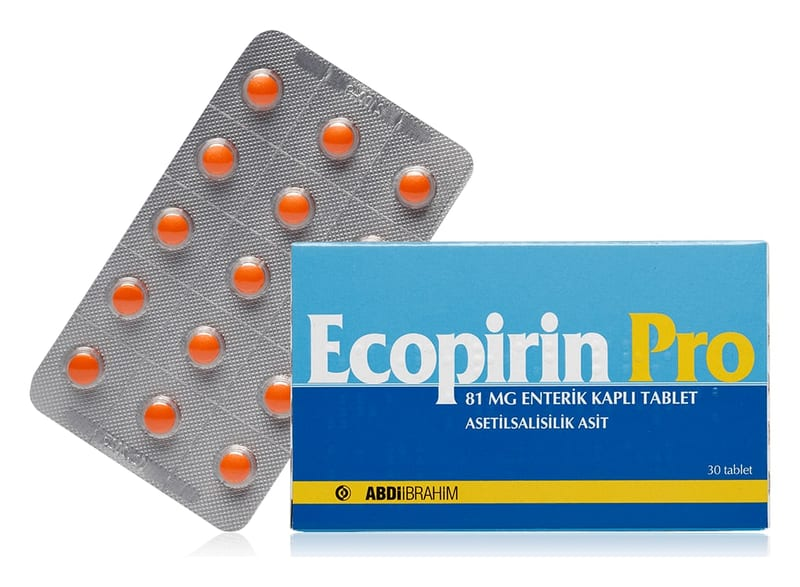

Ecopirin Pro 81 mg Enterik Kaplı Tablet , 90 Adet

Ne için kullanılır
KT · Bölüm 1• ECOPİRİN PRO enterik kaplı tabletlerin her biri 81 mg asetilsalisilik asit adlı etkin madde içerir. Asetilsalisilik asit, trombosit olarak adlandırılan pıhtılaşma hücrelerinin kümeleşmesini önleyerek etkisini gösterir. Bu özelliği nedeniyle çeşitli kalp hastalıklarında kullanılır.
• ECOPİRİN PRO, 30 ve 90 tabletlik ambalajlarda sunulmaktadır. Tabletler turuncu renkte, yuvarlak, bikonveks enterik tabletlerdir. Uzun dönemli tedavilerde mide şikayetlerini en aza indirmek üzere mide yerine barsaklarda çözünen tabletler olarak dizayn edilmiştir. Tabletlerin üzerindeki kaplama, ilacın ağız yoluyla uygulanmasından sonra mide yerine ince bağırsaktan emilmesini sağlar. • ECOPİRİN PRO, − Dinlenirken ortaya çıkan/hareketle ilişkisi olmayan göğüs ağrısı (Anstabil anjina pektoris)nda standart tedavinin bir parçası olarak − Ani kalp krizinde (Akut miyokard infarktüsünde) standart tedavinin bir parçası olarak, − Kalp krizinin tekrar etmesinden (reinfarktüs) korunmada, − Kalp ve damar ameliyatları sonrası damar tıkanmaları ve pıhtıların önlenmesinde, − Riskli hasta gruplarında geçici felçlerin ve inmelerin önlenmesinde, − Sıklıkla beş yaşından küçük çocuklarda ortaya çıkan ve ateş, ciltte döküntü, çilek görünümünde dil, kırmızı ve çatlamış görünümünde dudaklar, avuç içi ve ayak tabanının kızarık renkte görünümü ile karakterize bir damar iltihabı hastalığında (Kawasaki hastalığı) o Ateşli dönemde iltihabı (inflamasyonu) azaltmak için, o Kalbi besleyen kan damarı duvarlarında anormal genişleme (anevrizma) durumunda kanın pıhtılaşmasının önlenmesinde kullanılır.